Префектура Тояма · Яцуо · сладости
Rinseidou: сладости старой лавки Яцуо в обёртках мастера мингэй
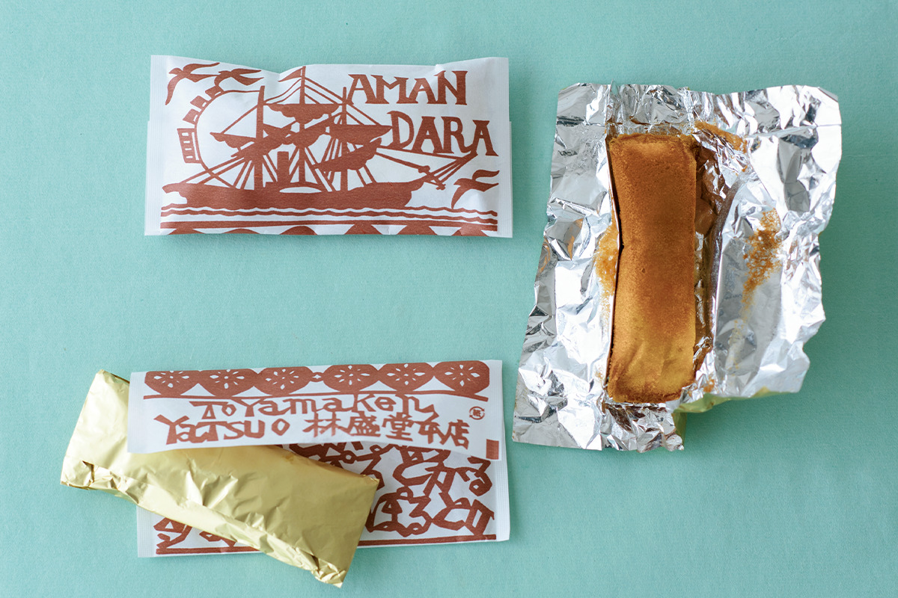
В горном городке Яцуо с XIX века работает кондитерская Rinseidou. Её сладости знают не только по вкусу: обёртки и коробки к ним рисовал мастер бумаги, участник движения мингэй.
Лавка
Старейшая кондитерская Яцуо
В эпоху Эдо городок Эттю-Яцуо входил в княжество Тояма и был его хозяйственным центром. Сегодня Яцуо, пятая станция от Тоямы по железной дороге, известен прежде всего праздником «Овара кадзэ-но бон»: здесь танцуют под народную песню «Овара-буси». Город окружён горами, улицы в нём идут то вверх, то вниз, и природные условия здесь издавна помогали делать хорошую бумагу васи.
Среди старых улиц Яцуо стоит кондитерская Rinseidou. По преданию, её открыли около 1877 года, в начале эпохи Мэйдзи, и с тех пор лавку ведут уже пять поколений одной семьи. По всей Японии Rinseidou знают по «Овара таматэн», японскому безе. Но у лавки есть и другая история, о которой стоит помнить: её связь с движением мингэй.
Мингэй
Бумажный мастер и кондитер
Кэйсукэ Ёсида основал в Яцуо мастерскую бумаги «Эттю Яцуо васи» Keijusha. Его увлекли идеи Мунэёси Янаги (1889–1961), философа, который создал движение мингэй и учил видеть красоту в простых вещах, сделанных руками безымянных мастеров. Ёсида учился технике трафаретного крашения у Кэйсукэ Сэридзавы (1895–1984), одного из главных художников этого движения, и всю жизнь возрождал бумажное ремесло своего края. Шкатулки, оклеенные бумагой Keijusha, и сложенные как оригами кошельки для монет любят за яркие цвета и милые узоры.
Ёсида был близким другом одного из прежних хозяев Rinseidou и уважаемым советником лавки. Хозяин заказывал ему упаковку для сладостей, а иногда советовался с ним и о вкусе. Поэтому в Rinseidou до сих пор так много коробок, обёрток и бумажных пакетов работы Ёсиды, и в каждой видна его рука.
Амандара
Кекс в фольге с мыслью о Португалии
Среди работ Ёсиды и упаковка «Амандары», сладости, которую лавка придумала, думая о далёкой Португалии. Название значит «мандала, которую делает лавка сладкого»: в нём сходятся японское «амай», сладкий, и слово «мандала».
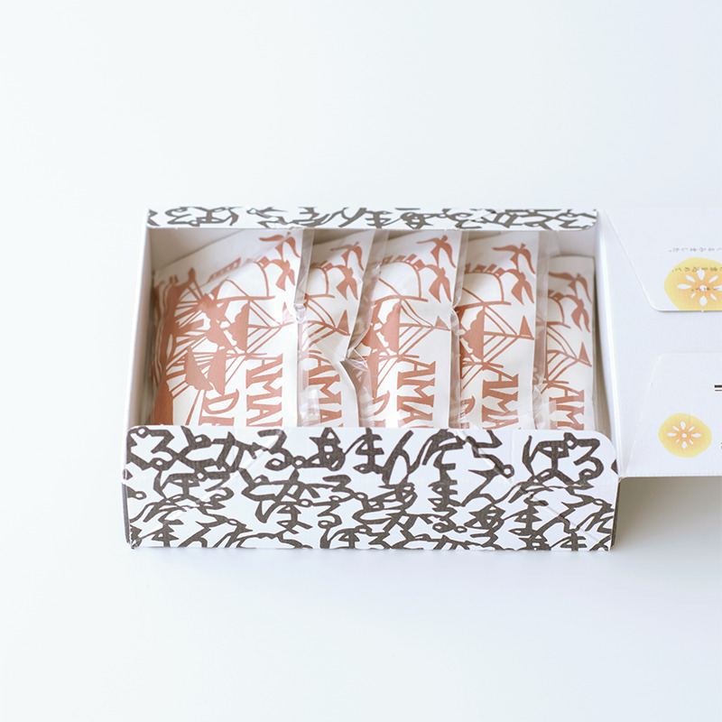
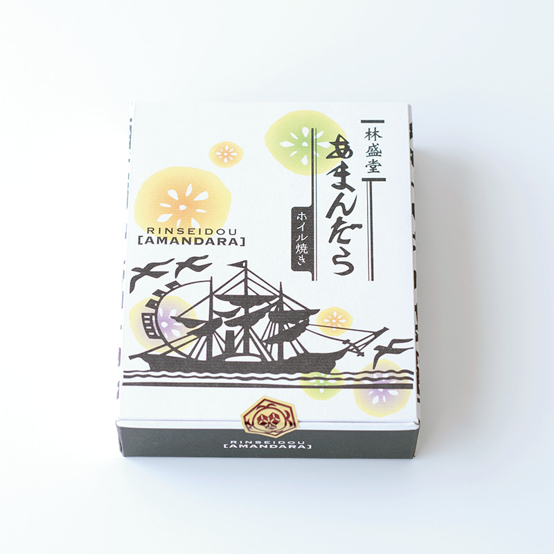
Внутри масляной кастеллы, японского бисквита, прячется каштановая паста с фруктами, вымоченными в собственной смеси лавки на основе крепкого алкоголя. Тесто заворачивают в фольгу и так запекают, и сегодня этот способ уже редкость. Аромат каштана и фруктов хорошо подходит к кофе. Нарядную обёртку с парусником и узором из слов «Амандара Порутогару» после кофе стоит аккуратно расправить и рассмотреть.
Сугэн
Ёкан с эгомой
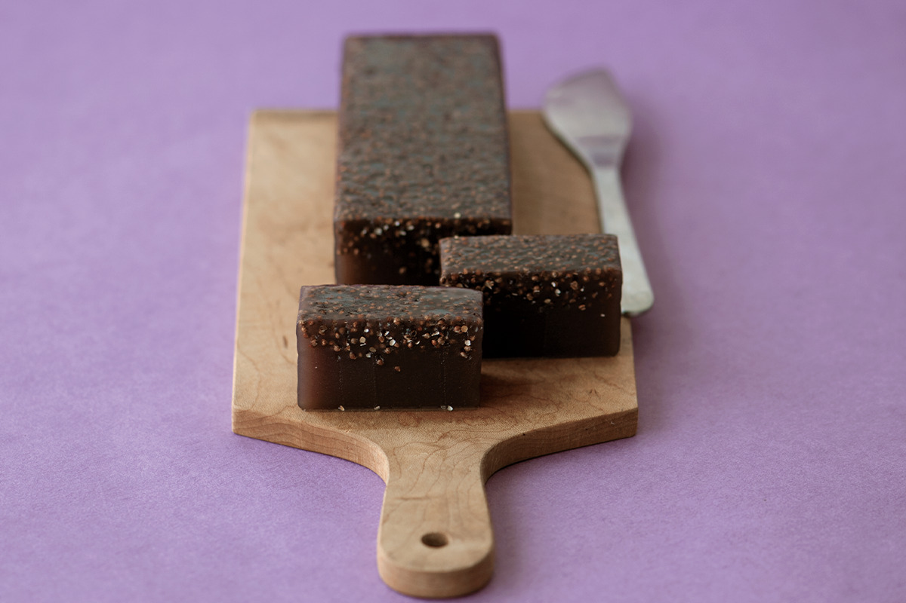
«Сугэн» это ёкан, плотная пастила из бобовой пасты, которую долго уваривают и вымешивают. В тесто добавляют эгому, местную перилу, и поверхность от неё становится шероховатой, как кожура груши. Зёрнышки приятно лопаются на зубах. Эгому считают полезной для здоровья, и здесь её не жалеют.
Название составлено из двух знаков. Первый значит «исходный, такой, как есть» и «белый», второй значит «глубокий, непостижимый» и «чёрный». В этих двух словах и срез сладости, и её суть.
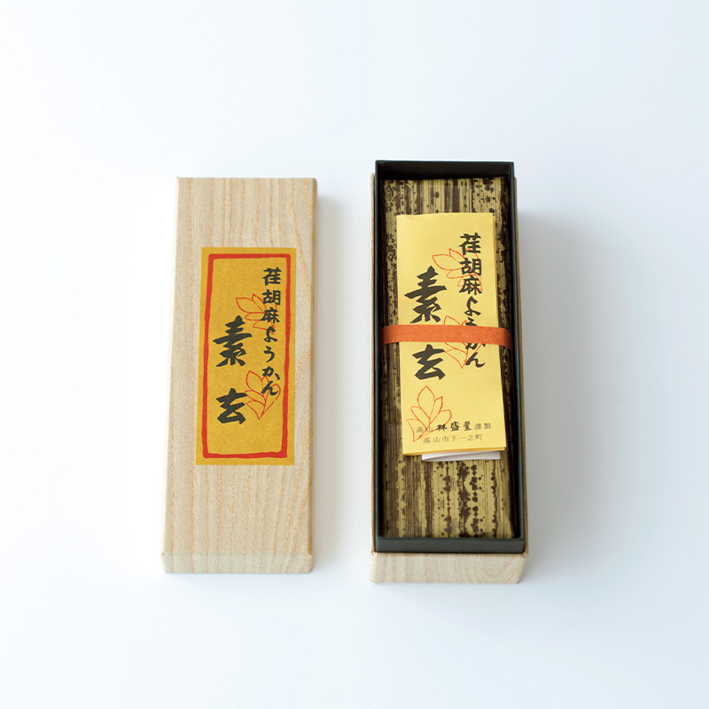
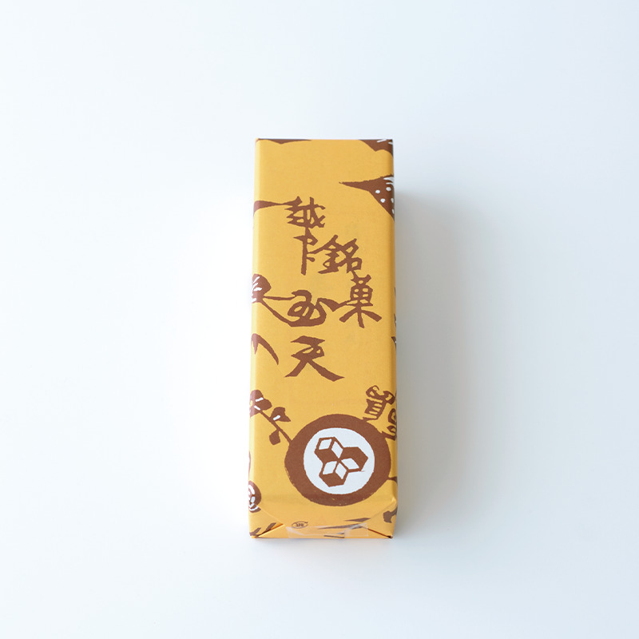
Хина-боро
Печенье из жареной фасоли адзуки
На сайте лавки о нём говорят так: «В Киото есть соба-боро, а в деревенском Эттю-Яцуо есть адзуки-боро». Знак «хина» в названии значит «глушь, провинция». Но на пакете стоят другие знаки, «высокое стремление», и это вроде заявления о том, к чему стремится лавка.
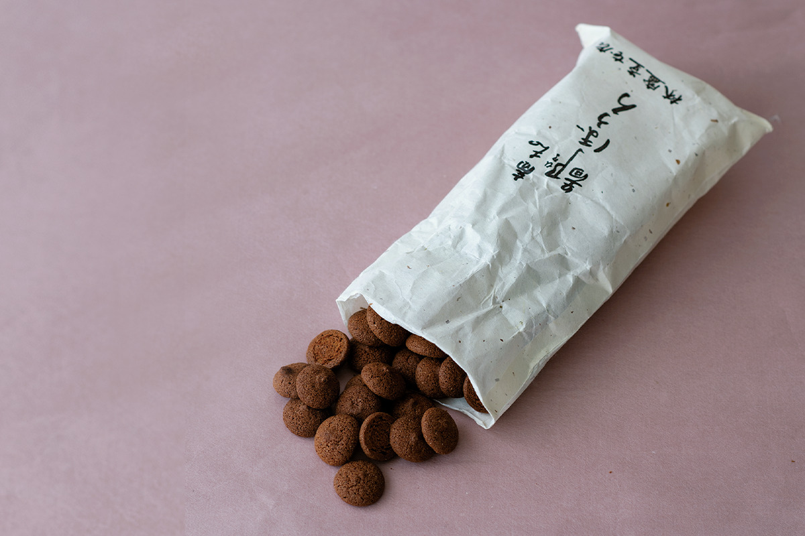
Фасоль адзуки обжаривают и мелют на старом каменном жёрнове, и аромат такой муки покоряет сразу. Во рту печенье рассыпается, и хочется сказать, что для глуши вкус на удивление изысканный. Тесто формуют по старинному способу «нанбан-боро» и делают на один укус. Печенье такое маленькое и милое, что его хочется называть «хина-боро» в другом смысле: от созвучного слова «хина», «маленький, птенец».
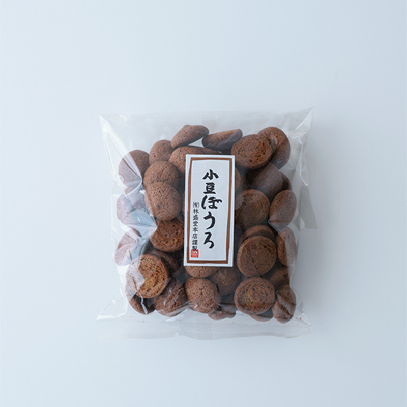
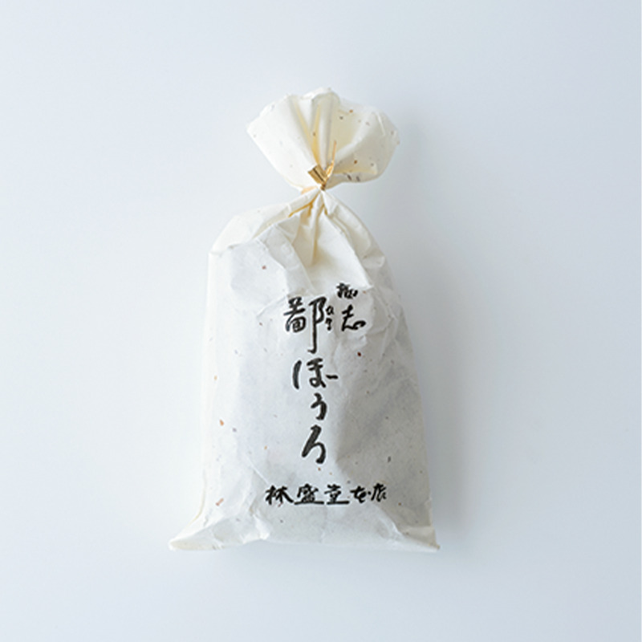
Итии
Монака с эгомой
«Итии» это монака, две тонкие хрустящие вафли с начинкой из бобовой пасты. В пасту добавляют молотую эгому из Тоямы, поэтому сладость получается неприторной, со свежим ароматом. Эта монака получила награду «Кинкасё» на 27-й Всеяпонской выставке кондитерских изделий.
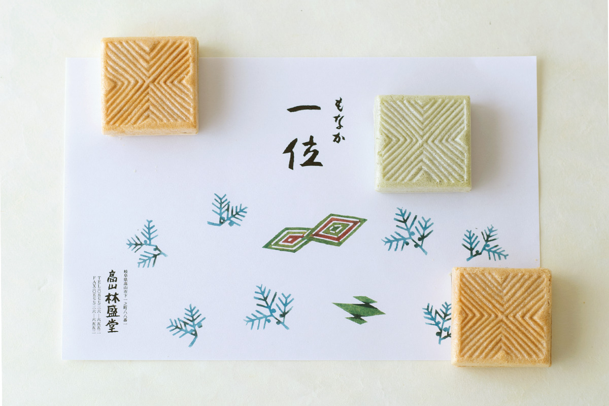
Если заказать «Итии» в подарочной коробке, её обернут в обёрточную бумагу с милым рисунком Ёсиды. Простой и красивый узор на вафлях напоминает орнаменты Кореи эпохи Чосон, которые очень любил Ёсида, и кажется, что он вырос именно из них.
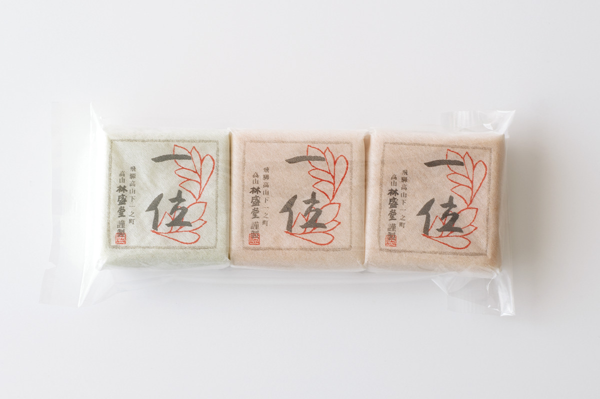
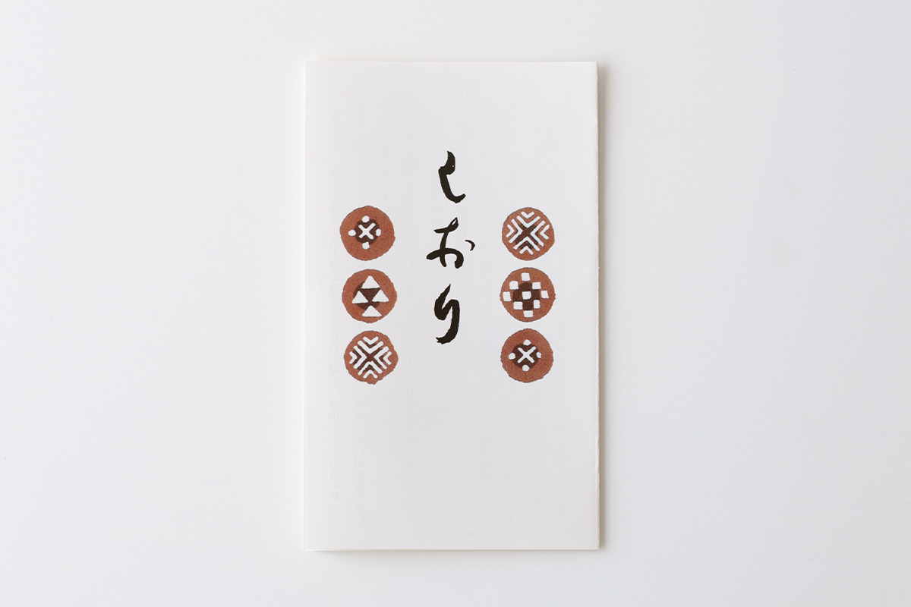
Rinseidou
- Адрес
- префектура Тояма, город Тояма, Яцуо-мати, Фукусима, 3-8
- Телефон
- +81 76-454-4670
- Часы работы
- 9:00–18:00
- Выходные
- нерегулярные
- Как добраться
- станция Эттю-Яцуо, пятая от станции Тояма
Фото: Вакана Баба.